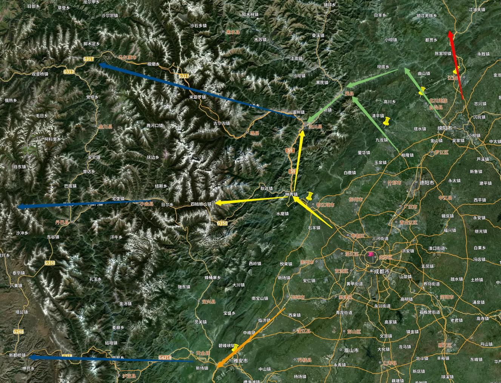

开篇：谈谈自己
我从小就喜欢开车。那时还是小学生，考不了驾照，每次乘公交车都要坐到司机边上看他操作。我还喜欢看各种冒险小说，从小说中汲取到灵感，便结合自己的想象力，写流水账小说。
初中高中六年，这骨子劲像被封印起来一样，当谈到旅行时，完全提不起兴致。直到上了大学后，感觉童年时那些爱好、那些不切实际的想法才慢慢解冻，我觉得自己找回了儿时的自己。没错，这才是真实的自我。
2022年10月，我从深圳来到成都工作。刚来时还是很新鲜的，但当我把住处附近的所有饭店都吃了一遍，几乎所有公园、景点都逛了一遍后，到了周末就感觉乏味了。有一天突发奇想，想和当时的女朋友（现在的老婆）一起去 5·12 大地震的震中之一 —— 映秀 参观一下，毕竟 5 ·12 大地震对于我们北方人来说，仅仅是停留在不让去网吧、百度主页全部变成灰色、全民哀悼捐款等事，并没有切身感受地震带来的深重灾难。查了一下路线后发现还不远，就动身出发。
我们先抵达都江堰，游玩后打车到达映秀。都江堰后的崇山峻岭高耸矗立，像一堵顶天的墙一样，出租车驶过蓉昌高速狭长的隧道，再驶过紫坪铺水库大桥，便正式离开了四川盆地。这边的景象，是我在北方老家从未见过的景象。
后来，随着自驾经历不断丰富，我总结了5条从成都平原进入川西地区的“出关要道”。
蓝色箭头表示自东向西方向，在川西地区的主要交通干道，从北到南依次为：
- 317 国道
- 350 国道
- 318 国道
红色箭头，则去往九寨沟方向，更远则到达甘肃。
五条“出关要道”，从北到南依次为：
- 江油
- 北川
- 绵竹
- 都江堰
- 雅安
从卫星地图上可以看到，这五条出关要道均分布在龙门山脉上，这也是四川盆地的边缘。
原先去九寨沟，也是走汶川、松潘、川主寺的线路，由于九绵高速的开通，可以在江油穿过九皇山，路过白马藏族聚居地（王朗保护区），沿着川甘边界到达九寨沟，耗费时间约6-7小时，路况极好。关于九寨沟路线，后面可以单开一部分来写。

后来，我们到映秀漩口小学和山坡上的公墓看了看。走出映秀时，内心多了一丝忧伤与平静。这一趟旅行，激起了我的探索欲望。半山腰上的公路，沿着河流的走势，延伸到看不到头的群山之中；风格独具的羌族碉楼筑在陡峭的山坡上，云雾缭绕难以见其全貌——这究竟是怎样一片土地？在城市森林之外还存在着其他的生活方式？
当时我还没有买车，便在下个月租了一辆车，查了查路线，驶入这茫茫群山之中。后来才发现，一旦开启了这趟旅途，便永远无法停下了。